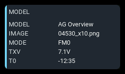
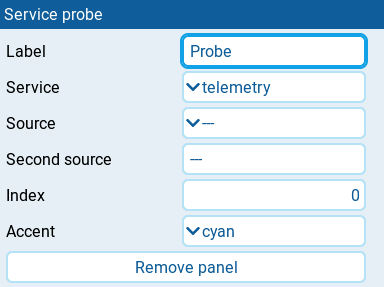

Service probe

Displays label-and-value rows from one shared AeroGrid data service. This developer diagnostic panel helps check normalized values, units, precision, availability, and navigation calculations independently of the flight panels that use them.
The panel needs at least 2x2 cells to fit its rows.
Settings

| Setting | Default | What it does |
|---|---|---|
| Label | service name | Panel heading. Clear it to use the selected Service. |
| Service | telemetry | Service to inspect: telemetry, model, control, extrema, or navigation. |
| Source | none | EdgeTX source picker. Select the reading for telemetry, GPS source for navigation, trim source for control, or reading to track for extrema. Unused by model. |
| Second source | none | Legacy arm switch condition for extrema, used only before model arming is saved. Enter a physical position or logical switch name, not a numeric source. Unused by the other services. |
| Index | 0 | Zero-based timer index for model (0 to 2) or global variable index for control (0 to 8). Unused by the other services. The number control steps by 1 from -100000 to 100000, not just the useful index range, and has no empty option. |
| Accent | cyan | Panel accent: cyan, green, amber, or orange. Reported service states do not change the panel color. |
| Remove panel | Deletes the panel from the screen. |
All settings remain visible for every Service, including those it does not use.
Behavior
telemetry reports the selected source name, state, formatted value, unit, precision, reading age, and link status. navigation reports the GPS source, fix and home availability, latitude, longitude, distance, and bearing.
model requests model identity, flight mode, transmitter voltage, and the selected timer. control requests the selected trim, when Source is not empty, and the selected global variable in the current flight mode. extrema requests shared flight-session status and, when Source is not empty, session minimum and maximum values for that source. These three services report shared subscriptions, so rows requested by other panels can appear too.
For extrema, the Arm switch in Model settings takes precedence over Second source. Consumers with the same effective switch share session data; without an arm condition, tracking is open-ended. The model's Session reset switch clears these session extrema and timing. This is diagnostic session tracking, not shared flight detection.
Rows are left-aligned in two columns and refresh about twice per second. Only the rows that fit are shown, up to eight. Enlarge the panel to reveal more; any remaining rows are omitted. Service state text is diagnostic output, not a panel alarm or stale badge.
States
| Condition | Presentation |
|---|---|
| Service available | The service's diagnostic rows with the normal Accent. |
| Telemetry reading stale or unavailable | State and value reported in the diagnostic rows; panel colors remain normal. |
| No navigation fix or home | NO in the corresponding rows; missing coordinates, distance, or bearing show -. |
| Model or control reading unavailable | N/A or the service's unavailable timer text in the affected row. |
| No tracked extrema available | N/A in the affected source row; flight and arming status remain separate rows. |
| Service missing | Uppercase service name with UNAVAILABLE; no unavailable badge. |
| Subscription fails | Empty report area; the panel does not display the subscription error. |
| Service returns no rows | Empty report area beneath the heading. |
| Report exceeds available space | Trailing rows are hidden; no warning badge is added. |